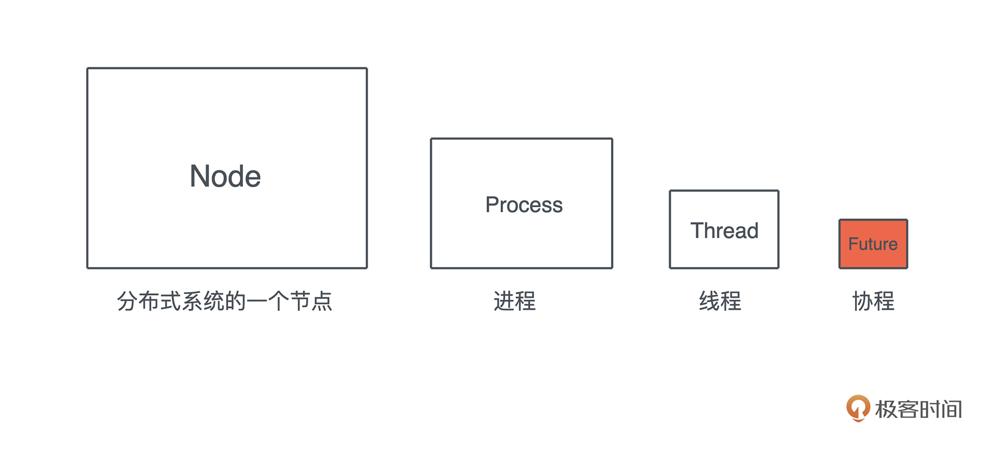
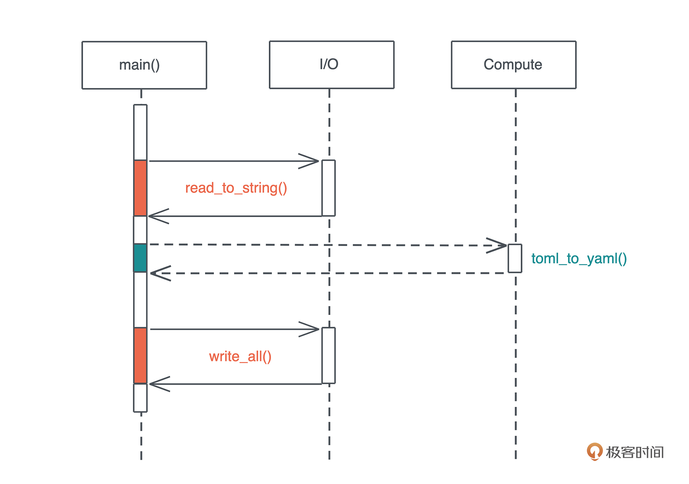
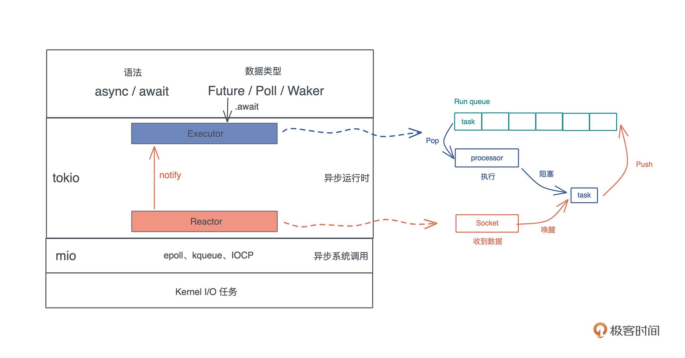

- 00 开篇词 让Rust成为你的下一门主力语言.md
- 01 内存：值放堆上还是放栈上，这是一个问题.md
- 02 串讲：编程开发中，那些你需要掌握的基本概念.md
- 03 初窥门径：从你的第一个Rust程序开始！.md
- 04 get hands dirty：来写个实用的CLI小工具.md
- 05 get hands dirty：做一个图片服务器有多难？.md
- 06 get hands dirty：SQL查询工具怎么一鱼多吃？.md
- 07 所有权：值的生杀大权到底在谁手上？.md
- 08 所有权：值的借用是如何工作的？.md
- 09 所有权：一个值可以有多个所有者么？.md
- 10 生命周期：你创建的值究竟能活多久？.md
- 11 内存管理：从创建到消亡，值都经历了什么？.md
- 12 类型系统：Rust的类型系统有什么特点？.md
- 13 类型系统：如何使用trait来定义接口？.md
- 14 类型系统：有哪些必须掌握的trait？.md
- 15 数据结构：这些浓眉大眼的结构竟然都是智能指针？.md
- 16 数据结构：Vec_T、&[T]、Box[T]_ ，你真的了解集合容器么？.md
- 17 数据结构：软件系统核心部件哈希表，内存如何布局？.md
- 18 错误处理：为什么Rust的错误处理与众不同？.md
- 19 闭包：FnOnce、FnMut和Fn，为什么有这么多类型？.md
- 20 4 Steps ：如何更好地阅读Rust源码？.md
- 21 阶段实操（1）：构建一个简单的KV server-基本流程.md
- 22 阶段实操（2）：构建一个简单的KV server-基本流程.md
- 23 类型系统：如何在实战中使用泛型编程？.md
- 24 类型系统：如何在实战中使用trait object？.md
- 25 类型系统：如何围绕trait来设计和架构系统？.md
- 26 阶段实操（3）：构建一个简单的KV server-高级trait技巧.md
- 27 生态系统：有哪些常有的Rust库可以为我所用？.md
- 28 网络开发（上）：如何使用Rust处理网络请求？.md
- 29 网络开发（下）：如何使用Rust处理网络请求？.md
- 30 Unsafe Rust：如何用C++的方式打开Rust？.md
- 31 FFI：Rust如何和你的语言架起沟通桥梁？.md
- 32 实操项目：使用PyO3开发Python3模块.md
- 33 并发处理（上）：从atomics到Channel，Rust都提供了什么工具？.md
- 34 并发处理（下）：从atomics到Channel，Rust都提供了什么工具？.md
- 35 实操项目：如何实现一个基本的MPSC channel？.md
- 36 阶段实操（4）：构建一个简单的KV server-网络处理.md
- 37 阶段实操（5）：构建一个简单的KV server-网络安全.md
- 38 异步处理：Future是什么？它和async_await是什么关系？.md
- 39 异步处理：async_await内部是怎么实现的？.md
- 40 异步处理：如何处理异步IO？.md
- 41 阶段实操（6）：构建一个简单的KV server-异步处理.md
- 42 阶段实操（7）：构建一个简单的KV server-如何做大的重构？.md
- 43 生产环境：真实世界下的一个Rust项目包含哪些要素？.md
- 44 数据处理：应用程序和数据如何打交道？.md
- 45 阶段实操（8）：构建一个简单的KV server-配置_测试_监控_CI_CD.md
- 46 软件架构：如何用Rust架构复杂系统？.md
- 加餐 Rust2021版次问世了！.md
- 加餐 代码即数据：为什么我们需要宏编程能力？.md
- 加餐 宏编程（上）：用最“笨”的方式撰写宏.md
- 加餐 宏编程（下）：用 syn_quote 优雅地构建宏.md
- 加餐 愚昧之巅：你的Rust学习常见问题汇总.md
- 加餐 期中测试：参考实现讲解.md
- 加餐 期中测试：来写一个简单的grep命令行.md
- 加餐 这个专栏你可以怎么学，以及Rust是否值得学？.md
- 大咖助场 开悟之坡（上）：Rust的现状、机遇与挑战.md
- 大咖助场 开悟之坡（下）：Rust的现状、机遇与挑战.md
- 特别策划 学习锦囊（一）：听听课代表们怎么说.md
- 特别策划 学习锦囊（三）：听听课代表们怎么说.md
- 特别策划 学习锦囊（二）：听听课代表们怎么说.md
- 用户故事 绝望之谷：改变从学习开始.md
- 用户故事 语言不仅是工具，还是思维方式.md
- 结束语 永续之原：Rust学习，如何持续精进？.md
38 异步处理：Future是什么？它和async_await是什么关系？
你好，我是陈天。
通过前几讲的学习，我们对并发处理，尤其是常用的并发原语，有了一个比较清晰的认识。并发原语是并发任务之间同步的手段，今天我们要学习的 Future 以及在更高层次上处理 Future 的 async/await，是产生和运行并发任务的手段。
不过产生和运行并发任务的手段有很多，async/await 只是其中之一。在一个分布式系统中，并发任务可以运行在系统的某个节点上；在某个节点上，并发任务又可以运行在多个进程中；而在某个进程中，并发任务可以运行在多个线程中；在某个（些）线程上，并发任务可以运行在多个 Promise/Future/Goroutine/Erlang process 这样的协程上。
它们的粒度从大到小如图所示：-

在之前的课程里，我们大量应用了线程这种并发工具，在 kv server 的构建过程中，也通过 async/await 用到了 Future 这样的无栈协程。
其实 Rust 的 Future 跟 JavaScript 的 Promise 非常类似。
如果你熟悉 JavaScript，应该熟悉 Promise 的概念，[02]也简单讲过，它代表了在未来的某个时刻才能得到的结果的值，Promise 一般存在三个状态；
- 初始状态，Promise 还未运行；
- 等待（pending）状态，Promise 已运行，但还未结束；
- 结束状态，Promise 成功解析出一个值，或者执行失败。
只不过 JavaScript 的 Promise 和线程类似，一旦创建就开始执行，对 Promise await 只是为了“等待”并获取解析出来的值；而 Rust 的 Future，只有在主动 await 后才开始执行。
讲到这里估计你也看出来了，谈 Future 的时候，我们总会谈到 async/await。一般而言，async 定义了一个可以并发执行的任务，而 await 则触发这个任务并发执行。大多数语言，包括 Rust，async/await 都是一个语法糖（syntactic sugar），它们使用状态机将 Promise/Future 这样的结构包装起来进行处理。
这一讲我们先把内部的实现放在一边，主要聊 Future/async/await 的基本概念和使用方法，下一讲再来详细介绍它们的原理。
为什么需要 Future？
首先，谈一谈为什么需要 Future 这样的并发结构。
在 Future 出现之前，我们的 Rust 代码都是同步的。也就是说，当你执行一个函数，CPU 处理完函数中的每一个指令才会返回。如果这个函数里有 IO 的操作，实际上，操作系统会把函数对应的线程挂起，放在一个等待队列中，直到 IO 操作完成，才恢复这个线程，并从挂起的位置继续执行下去。
这个模型非常简单直观，代码是一行一行执行的，开发者并不需要考虑哪些操作会阻塞，哪些不会，只关心他的业务逻辑就好。
然而，随着 CPU 技术的不断发展，新世纪应用软件的主要矛盾不再是 CPU 算力不足，而是过于充沛的 CPU 算力和提升缓慢的 IO 速度之间的矛盾。如果有大量的 IO 操作，你的程序大部分时间并没有在运算，而是在不断地等待 IO。
我们来看一个例子（代码）：
use anyhow::Result;
use serde_yaml::Value;
use std::fs;
fn main() -> Result<()> {
// 读取 Cargo.toml，IO 操作 1
let content1 = fs::read_to_string("./Cargo.toml")?;
// 读取 Cargo.lock，IO 操作 2
let content2 = fs::read_to_string("./Cargo.lock")?;
// 计算
let yaml1 = toml2yaml(&content1)?;
let yaml2 = toml2yaml(&content2)?;
// 写入 /tmp/Cargo.yml，IO 操作 3
fs::write("/tmp/Cargo.yml", &yaml1)?;
// 写入 /tmp/Cargo.lock，IO 操作 4
fs::write("/tmp/Cargo.lock", &yaml2)?;
// 打印
println!("{}", yaml1);
println!("{}", yaml2);
Ok(())
}
fn toml2yaml(content: &str) -> Result<String> {
let value: Value = toml::from_str(&content)?;
Ok(serde_yaml::to_string(&value)?)
}
这段代码读取 Cargo.toml 和 Cargo.lock 将其转换成 yaml，再分别写入到 /tmp 下。
虽然说这段代码的逻辑并没有问题，但性能有很大的问题。在读 Cargo.toml 时，整个主线程被阻塞，直到 Cargo.toml 读完，才能继续读下一个待处理的文件。整个主线程，只有在运行 toml2yaml 的时间片内，才真正在执行计算任务，之前的读取文件以及之后的写入文件，CPU 都在闲置。-

当然，你会辩解，在读文件的过程中，我们不得不等待，因为 toml2yaml 函数的执行有赖于读取文件的结果。嗯没错，但是，这里还有很大的 CPU 浪费：我们读完第一个文件才开始读第二个文件，有没有可能两个文件同时读取呢？这样总共等待的时间是 max(time_for_file1, time_for_file2)，而非 time_for_file1 + time_for_file2 。
这并不难，我们可以把文件读取和写入的操作放入单独的线程中执行，比如（代码）：
use anyhow::{anyhow, Result};
use serde_yaml::Value;
use std::{
fs,
thread::{self, JoinHandle},
};
/// 包装一下 JoinHandle，这样可以提供额外的方法
struct MyJoinHandle<T>(JoinHandle<Result<T>>);
impl<T> MyJoinHandle<T> {
/// 等待 thread 执行完（类似 await）
pub fn thread_await(self) -> Result<T> {
self.0.join().map_err(|_| anyhow!("failed"))?
}
}
fn main() -> Result<()> {
// 读取 Cargo.toml，IO 操作 1
let t1 = thread_read("./Cargo.toml");
// 读取 Cargo.lock，IO 操作 2
let t2 = thread_read("./Cargo.lock");
let content1 = t1.thread_await()?;
let content2 = t2.thread_await()?;
// 计算
let yaml1 = toml2yaml(&content1)?;
let yaml2 = toml2yaml(&content2)?;
// 写入 /tmp/Cargo.yml，IO 操作 3
let t3 = thread_write("/tmp/Cargo.yml", yaml1);
// 写入 /tmp/Cargo.lock，IO 操作 4
let t4 = thread_write("/tmp/Cargo.lock", yaml2);
let yaml1 = t3.thread_await()?;
let yaml2 = t4.thread_await()?;
fs::write("/tmp/Cargo.yml", &yaml1)?;
fs::write("/tmp/Cargo.lock", &yaml2)?;
// 打印
println!("{}", yaml1);
println!("{}", yaml2);
Ok(())
}
fn thread_read(filename: &'static str) -> MyJoinHandle<String> {
let handle = thread::spawn(move || {
let s = fs::read_to_string(filename)?;
Ok::<_, anyhow::Error>(s)
});
MyJoinHandle(handle)
}
fn thread_write(filename: &'static str, content: String) -> MyJoinHandle<String> {
let handle = thread::spawn(move || {
fs::write(filename, &content)?;
Ok::<_, anyhow::Error>(content)
});
MyJoinHandle(handle)
}
fn toml2yaml(content: &str) -> Result<String> {
let value: Value = toml::from_str(&content)?;
Ok(serde_yaml::to_string(&value)?)
}
这样，读取或者写入多个文件的过程并发执行，使等待的时间大大缩短。
但是，如果要同时读取 100 个文件呢？显然，创建 100 个线程来做这样的事情不是一个好主意。在操作系统中，线程的数量是有限的，创建/阻塞/唤醒/销毁线程，都涉及不少的动作，每个线程也都会被分配一个不小的调用栈，所以从 CPU 和内存的角度来看，创建过多的线程会大大增加系统的开销。
其实，绝大多数操作系统对 I/O 操作提供了非阻塞接口，也就是说，你可以发起一个读取的指令，自己处理类似 EWOULDBLOCK这样的错误码，来更好地在同一个线程中处理多个文件的 IO，而不是依赖操作系统通过调度帮你完成这件事。
不过这样就意味着，你需要定义合适的数据结构来追踪每个文件的读取，在用户态进行相应的调度，阻塞等待 IO 的数据结构的运行，让没有等待 IO 的数据结构得到机会使用 CPU，以及当 IO 操作结束后，恢复等待 IO 的数据结构的运行等等。这样的操作粒度更小，可以最大程度利用 CPU 资源。这就是类似 Future 这样的并发结构的主要用途。
然而，如果这么处理，我们需要在用户态做很多事情，包括处理 IO 任务的事件通知、创建 Future、合理地调度 Future。这些事情，统统交给开发者做显然是不合理的。所以，Rust 提供了相应处理手段 async/await ：async 来方便地生成 Future，await 来触发 Future 的调度和执行。
我们看看，同样的任务，如何用 async/await 更高效地处理（代码）：
use anyhow::Result;
use serde_yaml::Value;
use tokio::{fs, try_join};
#[tokio::main]
async fn main() -> Result<()> {
// 读取 Cargo.toml，IO 操作 1
let f1 = fs::read_to_string("./Cargo.toml");
// 读取 Cargo.lock，IO 操作 2
let f2 = fs::read_to_string("./Cargo.lock");
let (content1, content2) = try_join!(f1, f2)?;
// 计算
let yaml1 = toml2yaml(&content1)?;
let yaml2 = toml2yaml(&content2)?;
// 写入 /tmp/Cargo.yml，IO 操作 3
let f3 = fs::write("/tmp/Cargo.yml", &yaml1);
// 写入 /tmp/Cargo.lock，IO 操作 4
let f4 = fs::write("/tmp/Cargo.lock", &yaml2);
try_join!(f3, f4)?;
// 打印
println!("{}", yaml1);
println!("{}", yaml2);
Ok(())
}
fn toml2yaml(content: &str) -> Result<String> {
let value: Value = toml::from_str(&content)?;
Ok(serde_yaml::to_string(&value)?)
}
在这段代码里，我们使用了 tokio::fs，而不是 std::fs，tokio::fs 的文件操作都会返回一个 Future，然后可以 join 这些 Future，得到它们运行后的结果。join/try_join 是用来轮询多个 Future 的宏，它会依次处理每个 Future，遇到阻塞就处理下一个，直到所有 Future 产生结果。
整个等待文件读取的时间是 max(time_for_file1, time_for_file2)，性能和使用线程的版本几乎一致，但是消耗的资源（主要是线程）要少很多。
建议你好好对比这三个版本的代码，写一写，运行一下，感受它们的处理逻辑。注意在最后的 async/await 的版本中，我们不能把代码写成这样：
// 读取 Cargo.toml，IO 操作 1
let content1 = fs::read_to_string("./Cargo.toml").await?;
// 读取 Cargo.lock，IO 操作 2
let content1 = fs::read_to_string("./Cargo.lock").await?;
这样写的话，和第一版同步的版本没有区别，因为 await 会运行 Future 直到 Future 执行结束，所以依旧是先读取 Cargo.toml，再读取 Cargo.lock，并没有达到并发的效果。
深入了解
好，了解了 Future 在软件开发中的必要性，来深入研究一下 Future/async/await。
在前面代码撰写过程中，不知道你有没有发现，异步函数（async fn）的返回值是一个奇怪的 impl Future
我们知道，一般会用 impl 关键字为数据结构实现 trait，也就是说接在 impl 关键字后面的东西是一个 trait，所以，显然 Future 是一个 trait，并且还有一个关联类型 Output。
来看 Future 的定义：
pub trait Future {
type Output;
fn poll(self: Pin<&mut Self>, cx: &mut Context<'_>) -> Poll<Self::Output>;
}
pub enum Poll<T> {
Ready(T),
Pending,
}
除了 Output 外，它还有一个 poll() 方法，这个方法返回 PollSelf::Output。而 Poll
你看，这样一个简单的数据结构，就托起了庞大的 Rust 异步 async/await 处理的生态。
回到 async fn 的返回值我们接着说，显然它是一个 impl Future，那么如果我们给一个普通的函数返回 impl Future
use futures::executor::block_on;
use std::future::Future;
#[tokio::main]
async fn main() {
let name1 = "Tyr".to_string();
let name2 = "Lindsey".to_string();
say_hello1(&name1).await;
say_hello2(&name2).await;
// Future 除了可以用 await 来执行外，还可以直接用 executor 执行
block_on(say_hello1(&name1));
block_on(say_hello2(&name2));
}
async fn say_hello1(name: &str) -> usize {
println!("Hello {}", name);
42
}
// async fn 关键字相当于一个返回 impl Future<Output> 的语法糖
fn say_hello2<'fut>(name: &'fut str) -> impl Future<Output = usize> + 'fut {
async move {
println!("Hello {}", name);
42
}
}
运行这段代码你会发现，say_hello1 和 say_hello2 是等价的，二者都可以使用 await 来执行，也可以将其提供给一个 executor 来执行。
这里我们见到了一个新的名词：executor。
什么是 executor？
你可以把 executor 大致想象成一个 Future 的调度器。对于线程来说，操作系统负责调度；但操作系统不会去调度用户态的协程（比如 Future），所以任何使用了协程来处理并发的程序，都需要有一个 executor 来负责协程的调度。
很多在语言层面支持协程的编程语言，比如 Golang/Erlang，都自带一个用户态的调度器。Rust 虽然也提供 Future 这样的协程，但它在语言层面并不提供 executor，把要不要使用 executor 和使用什么样的 executor 的自主权交给了开发者。好处是，当我的代码中不需要使用协程时，不需要引入任何运行时；而需要使用协程时，可以在生态系统中选择最合适我应用的 executor。
常见的 executor 有：
- futures 库自带的很简单的 executor，上面的代码就使用了它的 block_on 函数；
- tokio 提供的 executor，当使用 #[tokio::main] 时，就隐含引入了 tokio 的 executor；
- async-std 提供的 executor，和 tokio 类似；
- smol 提供的 async-executor，主要提供了 block_on。
注意，上面的代码我们混用了 #[tokio::main] 和 futures:executor::block_on，这只是为了展示 Future 使用的不同方式，在正式代码里，不建议混用不同的 executor，会降低程序的性能，还可能引发奇怪的问题。
当我们谈到 executor 时，就不得不提 reactor，它俩都是 Reactor Pattern 的组成部分，作为构建高性能事件驱动系统的一个很典型模式，Reactor pattern 它包含三部分：
- task，待处理的任务。任务可以被打断，并且把控制权交给 executor，等待之后的调度；
- executor，一个调度器。维护等待运行的任务（ready queue），以及被阻塞的任务（wait queue）；
- reactor，维护事件队列。当事件来临时，通知 executor 唤醒某个任务等待运行。
executor 会调度执行待处理的任务，当任务无法继续进行却又没有完成时，它会挂起任务，并设置好合适的唤醒条件。之后，如果 reactor 得到了满足条件的事件，它会唤醒之前挂起的任务，然后 executor 就有机会继续执行这个任务。这样一直循环下去，直到任务执行完毕。
怎么用 Future 做异步处理？
理解了 Reactor pattern 后，Rust 使用 Future 做异步处理的整个结构就清晰了，我们以 tokio 为例：async/await 提供语法层面的支持，Future 是异步任务的数据结构，当 fut.await 时，executor 就会调度并执行它。
tokio 的调度器（executor）会运行在多个线程上，运行线程自己的 ready queue 上的任务（Future），如果没有，就去别的线程的调度器上“偷”一些过来运行。当某个任务无法再继续取得进展，此时 Future 运行的结果是 Poll::Pending，那么调度器会挂起任务，并设置好合适的唤醒条件（Waker），等待被 reactor 唤醒。
而 reactor 会利用操作系统提供的异步 I/O，比如 epoll/kqueue/IOCP，来监听操作系统提供的 IO 事件，当遇到满足条件的事件时，就会调用 Waker.wake() 唤醒被挂起的 Future。这个 Future 会回到 ready queue 等待执行。
整个流程如下：-

我们以一个具体的代码示例来进一步理解这个过程（代码）：
use anyhow::Result;
use futures::{SinkExt, StreamExt};
use tokio::net::TcpListener;
use tokio_util::codec::{Framed, LinesCodec};
#[tokio::main]
async fn main() -> Result<()> {
let addr = "0.0.0.0:8080";
let listener = TcpListener::bind(addr).await?;
println!("listen to: {}", addr);
loop {
let (stream, addr) = listener.accept().await?;
println!("Accepted: {:?}", addr);
tokio::spawn(async move {
// 使用 LinesCodec 把 TCP 数据切成一行行字符串处理
let framed = Framed::new(stream, LinesCodec::new());
// split 成 writer 和 reader
let (mut w, mut r) = framed.split();
for line in r.next().await {
// 每读到一行就加个前缀发回
w.send(format!("I got: {}", line?)).await?;
}
Ok::<_, anyhow::Error>(())
});
}
}
这是一个简单的 TCP 服务器，服务器每收到一个客户端的请求，就会用 tokio::spawn 创建一个异步任务，放入 executor 中执行。这个异步任务接受客户端发来的按行分隔（分隔符是 “\r\n”）的数据帧，服务器每收到一行，就加个前缀把内容也按行发回给客户端。
你可以用 telnet 和这个服务器交互：
❯ telnet localhost 8080
Trying 127.0.0.1...
Connected to localhost.
Escape character is '^]'.
hello
I got: hello
Connection closed by foreign host.
假设我们在客户端输入了很大的一行数据，服务器在做 r.next().await 在执行的时候，收不完一行的数据，因而这个 Future 返回 Poll::Pending，此时它被挂起。当后续客户端的数据到达时，reactor 会知道这个 socket 上又有数据了，于是找到 socket 对应的 Future，将其唤醒，继续接收数据。
这样反复下去，最终 r.next().await 得到 Poll::Ready(Ok(line))，于是它返回 Ok(line)，程序继续往下走，进入到 w.send() 的阶段。
从这段代码中你可以看到，在 Rust 下使用异步处理是一件非常简单的事情，除了几个你可能不太熟悉的概念，比如今天讲到的用于创建 Future 的 async 关键字，用于执行和等待 Future 执行完毕的 await 关键字，以及用于调度 Future 执行的运行时 #[tokio:main] 外，整体的代码和使用线程处理的代码完全一致。所以，它的上手难度非常低，很容易使用。
使用 Future 的注意事项
目前我们已经基本明白 Future 运行的基本原理了，也可以在程序的不同部分自如地使用 Future/async/await 来进行异步处理。
但是要注意，不是所有的应用场景都适合用 async/await，在使用的时候，有一些不容易注意到的坑需要我们妥善考虑。
1. 处理计算密集型任务时
当你要处理的任务是 CPU 密集型，而非 IO 密集型，更适合使用线程，而非 Future。
这是因为 Future 的调度是协作式多任务（Cooperative Multitasking），也就是说，除非 Future 主动放弃 CPU，不然它就会一直被执行，直到运行结束。我们看一个例子（代码）：
use anyhow::Result;
use std::time::Duration;
// 强制 tokio 只使用一个工作线程，这样 task 2 不会跑到其它线程执行
#[tokio::main(worker_threads = 1)]
async fn main() -> Result<()> {
// 先开始执行 task 1 的话会阻塞，让 task 2 没有机会运行
tokio::spawn(async move {
eprintln!("task 1");
// 试试把这句注释掉看看会产生什么结果
// tokio::time::sleep(Duration::from_millis(1)).await;
loop {}
});
tokio::spawn(async move {
eprintln!("task 2");
});
tokio::time::sleep(Duration::from_millis(1)).await;
Ok(())
}
task 1 里有一个死循环，你可以把它想象成是执行时间很长又不包括 IO 处理的代码。运行这段代码，你会发现，task 2 没有机会得到执行。这是因为 task 1 不执行结束，或者不让出 CPU，task 2 没有机会被调度。
如果你的确需要在 tokio（或者其它异步运行时）下运行运算量很大的代码，那么最好使用 yield 来主动让出 CPU，比如 tokio::task::yield_now()。这样可以避免某个计算密集型的任务饿死其它任务。
2. 异步代码中使用Mutex时
大部分时候，标准库的 Mutex 可以用在异步代码中，而且，这是推荐的用法。
然而，标准库的 MutexGuard 不能安全地跨越 await，所以，当我们需要获得锁之后执行异步操作，必须使用 tokio 自带的 Mutex，看下面的例子（代码）：
use anyhow::Result;
use std::{sync::Arc, time::Duration};
use tokio::sync::Mutex;
struct DB;
impl DB {
// 假装在 commit 数据
async fn commit(&mut self) -> Result<usize> {
Ok(42)
}
}
#[tokio::main]
async fn main() -> Result<()> {
let db1 = Arc::new(Mutex::new(DB));
let db2 = Arc::clone(&db1);
tokio::spawn(async move {
let mut db = db1.lock().await;
// 因为拿到的 MutexGuard 要跨越 await，所以不能用 std::sync::Mutex
// 只能用 tokio::sync::Mutex
let affected = db.commit().await?;
println!("db1: Total affected rows: {}", affected);
Ok::<_, anyhow::Error>(())
});
tokio::spawn(async move {
let mut db = db2.lock().await;
let affected = db.commit().await?;
println!("db2: Total affected rows: {}", affected);
Ok::<_, anyhow::Error>(())
});
// 让两个 task 有机会执行完
tokio::time::sleep(Duration::from_millis(1)).await;
Ok(())
}
这个例子模拟了一个数据库的异步 commit() 操作。如果我们需要在多个 tokio task 中使用这个 DB，需要使用 Arc
前面讲过，因为 tokio 实现了 work-stealing 调度，Future 有可能在不同的线程中执行，普通的 MutexGuard 编译直接就会出错，所以需要使用 tokio 的 Mutex。更多信息可以看文档。
在这个例子里，我们又见识到了 Rust 编译器的伟大之处：如果一件事，它觉得你不能做，会通过编译器错误阻止你，而不是任由编译通过，然后让程序在运行过程中听天由命，让你无休止地和捉摸不定的并发 bug 斗争。
3. 在线程和异步任务间做同步时
在一个复杂的应用程序中，会兼有计算密集和 IO 密集的任务。
前面说了，要避免在 tokio 这样的异步运行时中运行大量计算密集型的任务，一来效率不高，二来还容易饿死其它任务。
所以，一般的做法是我们使用 channel 来在线程和future两者之间做同步。看一个例子：
use std::thread;
use anyhow::Result;
use blake3::Hasher;
use futures::{SinkExt, StreamExt};
use rayon::prelude::*;
use tokio::{
net::TcpListener,
sync::{mpsc, oneshot},
};
use tokio_util::codec::{Framed, LinesCodec};
pub const PREFIX_ZERO: &[u8] = &[0, 0, 0];
#[tokio::main]
async fn main() -> Result<()> {
let addr = "0.0.0.0:8080";
let listener = TcpListener::bind(addr).await?;
println!("listen to: {}", addr);
// 创建 tokio task 和 thread 之间的 channel
let (sender, mut receiver) = mpsc::unbounded_channel::<(String, oneshot::Sender<String>)>();
// 使用 thread 处理计算密集型任务
thread::spawn(move || {
// 读取从 tokio task 过来的 msg，注意这里用的是 blocking_recv，而非 await
while let Some((line, reply)) = receiver.blocking_recv() {
// 计算 pow
let result = match pow(&line) {
Some((hash, nonce)) => format!("hash: {}, once: {}", hash, nonce),
None => "Not found".to_string(),
};
// 把计算结果从 oneshot channel 里发回
if let Err(e) = reply.send(result) {
println!("Failed to send: {}", e);
}
}
});
// 使用 tokio task 处理 IO 密集型任务
loop {
let (stream, addr) = listener.accept().await?;
println!("Accepted: {:?}", addr);
let sender1 = sender.clone();
tokio::spawn(async move {
// 使用 LinesCodec 把 TCP 数据切成一行行字符串处理
let framed = Framed::new(stream, LinesCodec::new());
// split 成 writer 和 reader
let (mut w, mut r) = framed.split();
for line in r.next().await {
// 为每个消息创建一个 oneshot channel，用于发送回复
let (reply, reply_receiver) = oneshot::channel();
sender1.send((line?, reply))?;
// 接收 pow 计算完成后的 hash 和 nonce
if let Ok(v) = reply_receiver.await {
w.send(format!("Pow calculated: {}", v)).await?;
}
}
Ok::<_, anyhow::Error>(())
});
}
}
// 使用 rayon 并发计算 u32 空间下所有 nonce，直到找到有头 N 个 0 的哈希
pub fn pow(s: &str) -> Option<(String, u32)> {
let hasher = blake3_base_hash(s.as_bytes());
let nonce = (0..u32::MAX).into_par_iter().find_any(|n| {
let hash = blake3_hash(hasher.clone(), n).as_bytes().to_vec();
&hash[..PREFIX_ZERO.len()] == PREFIX_ZERO
});
nonce.map(|n| {
let hash = blake3_hash(hasher, &n).to_hex().to_string();
(hash, n)
})
}
// 计算携带 nonce 后的哈希
fn blake3_hash(mut hasher: blake3::Hasher, nonce: &u32) -> blake3::Hash {
hasher.update(&nonce.to_be_bytes()[..]);
hasher.finalize()
}
// 计算数据的哈希
fn blake3_base_hash(data: &[u8]) -> Hasher {
let mut hasher = Hasher::new();
hasher.update(data);
hasher
}
在这个例子里，我们使用了之前撰写的 TCP server，只不过这次，客户端输入过来的一行文字，会被计算出一个 POW（Proof of Work）的哈希：调整 nonce，不断计算哈希，直到哈希的头三个字节全是零为止。服务器要返回计算好的哈希和获得该哈希的 nonce。这是一个典型的计算密集型任务，所以我们需要使用线程来处理它。
而在 tokio task 和 thread 间使用 channel 进行同步。我们使用了一个 ubounded MPSC channel 从 tokio task 侧往 thread 侧发送消息，每条消息都附带一个 oneshot channel 用于 thread 侧往 tokio task 侧发送数据。
建议你仔细读读这段代码，最好自己写一遍，感受一下使用 channel 在计算密集型和 IO 密集型任务同步的方式。如果你用 telnet 连接，发送 “hello world!”，会得到不同的哈希和 nonce，它们都是正确的结果：
❯ telnet localhost 8080
Trying 127.0.0.1...
Connected to localhost.
Escape character is '^]'.
hello world!
Pow calculated: hash: 0000006e6e9370d0f60f06bdc288efafa203fd99b9af0480d040b2cc89c44df0, once: 403407307
Connection closed by foreign host.
❯ telnet localhost 8080
Trying 127.0.0.1...
Connected to localhost.
Escape character is '^]'.
hello world!
Pow calculated: hash: 000000e23f0e9b7aeba9060a17ac676f3341284800a2db843e2f0e85f77f52dd, once: 36169623
Connection closed by foreign host.
小结
通过拆解async fn 有点奇怪的返回值结构，我们学习了 Reactor pattern，大致了解了 tokio 如何通过 executor 和 reactor 共同作用，完成 Future 的调度、执行、阻塞，以及唤醒。这是一个完整的循环，直到 Future 返回 Poll::Ready(T)。
在学习 Future 的使用时，估计你也发现了，我们可以对比线程来学习，可以看到，下列代码的结构多么相似：
fn thread_async() -> JoinHandle<usize> {
thread::spawn(move || {
println!("hello thread!");
42
})
}
fn task_async() -> impl Future<Output = usize> {
async move {
println!("hello async!");
42
}
}
在使用 Future 时，主要有3点注意事项：
- 我们要避免在异步任务中处理大量计算密集型的工作；
- 在使用 Mutex 等同步原语时，要注意标准库的 MutexGuard 无法跨越 .await，所以，此时要使用对异步友好的 Mutex，如 tokio::sync::Mutex；
- 如果要在线程和异步任务间同步，可以使用 channel。
今天为了帮助你深入理解，我们写了很多代码，每一段你都可以再仔细阅读几遍，把它们搞懂，最好自己也能直接写出来，这样你对 Future 才会有更深的理解。
思考题
想想看，为什么标准库的 Mutex 不能跨越 await？你可以把文中使用 tokio::sync::Mutex 的代码改成使用 std::sync::Mutex，并对使用的接口做相应的改动（把 lock().await 改成 lock().unwrap()），看看编译器会报什么错。对着错误提示，你明白为什么了么？
欢迎在留言区分享你的学习感悟和思考。今天你完成Rust学习的第38次打卡啦，感谢你的收听，如果你觉得有收获，也欢迎你分享给身边的朋友，邀他一起讨论。我们下节课见。
© 2019 - 2023 Liangliang Lee. Powered by gin and hexo-theme-book.